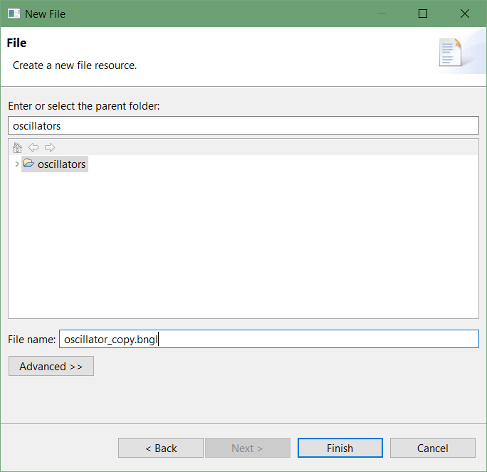

Software Tutorial: Perturbing the Repressilator
In this tutorial, we will see what happens when we make a sudden change to the concentration of one of the repressilator particles in the middle of the simulation. This is difficult to do with CellBlender, and so we will instead use this opportunity to transition to a “particle-free” tool called NFSim that does have the desired functionality. We will say much more about particle-free modeling, in which we do not have to track the movements of individual particles to track their concentrations, in a future module.
First, you will need to install NFSim and a program called RuleBender, which we will use as a GUI for NFSim. Those two programs can be installed . You may also download the completed tutorial file here.
We will first build a simulation of the repressilator that we will perturb later. Assuming you have installed RuleBender, open the RuleBender program and select File > New BioNetGen Project.

Select blank_file.bngl and name your project oscillators.

Note: Occasionally the following error will pop up to inform the user: “There was a failure during the copy of the sample”. The folder will be created, but no files will be loaded. Select File > New > File to create a new blank file.
Rename your file oscillator_copy.bngl and double-click the file in the navigator to open the editor window. Once in the editor window, add the following parameters:
begin parameters
r1 2e3
r2 6e2
r3 6e2
r4 2e2
r5 6e2
end parameters
Next, add the molecules used as follows:
begin molecule types
x(Y~U~P)
y(Y~U~P)
z(Y~U~P)
hx()
hy()
hz()
hx_off()
hy_off()
hz_off()
null()
end molecule types
Next, specify the quantities of each molecule at the start of the simulation:
begin species
x(Y~U) 150
y(Y~U) 0
z(Y~U) 0
hx() 100
hy() 100
hz() 100
hx_off() 0
hy_off() 0
hz_off() 0
null() 0
end species
To view a plot of the molecules after the simulation is complete, add the following code:
begin observables
Molecules X x()
Molecules Y y()
Molecules Z z()
end observables
The following rules and reaction parameters are the same reaction rules as used in the CellBlender tutorial on the repressilator.
begin reaction rules
# x copy
hx() -> hx() + x(Y~U) r1
x(Y~U) + hy() -> hy_off() + x(Y~P) r2
hy_off() -> hy() r3
x(Y~P) -> x(Y~U) r4
x() -> null() r5
# y copy
hy() -> hy() + y(Y~U) r1
y(Y~U) + hz() -> hz_off() + y(Y~P) r2
hz_off() -> hz() r3
y(Y~P) -> y(Y~U) r4
y() -> null() r5
# z copy
hz() -> hz() + z(Y~U) r1
z(Y~U) + hx() -> hx_off() + z(Y~P) r2
hx_off() -> hx() r3
z(Y~P) -> z(Y~U) r4
z() -> null() r5
end reaction rules
Finally, specify the type of simulation and number of frames to run using the following code.
# i.e. 12,000 frames at 1e-6 timestep on CellBlender
simulate_nf({t_end=>.06,n_steps=>60000});
Then, save your file.
On the right-hand side, click on Simulation > Run to run the simulation. After the simulation is complete, a new window will appear showing the plotted graph. As we can see, this appears to be the same behavior as the CellBlender plot but with a much cleaner pattern (this is because we do not have the noise incurred by having individual particles).
We will now perturb the file and test the robustness of this oscillator model.
In the Navigator window, right click oscillator_copy.bngl and copy the file. Paste a copy in the same folder and rename your file to oscillator_perturb.bngl.
Add the following parameters to the parameters section of the file:
# delay mechanic
r6 1e7
r7 4e2
r8 1e3
r9 2e4
r10 1e3
Then add the following molecules to the molecules section:
# delay mechanic
delay()
a(Y~U~P)
b()
null()
Add the following to species:
# Delay mechanic
delay() 100
a(Y~U) 1000
b() 0
null() 0
Optional: add the following to observables:
Molecules D delay()
Molecules A a()
Molecules B b()
Finally, add the following to reaction rules. These rules act as a delayed spike to the y() molecule. Once the delay() molecule has sufficiently decayed into null(), the a() molecule will begin producing the b() molecule, which will in turn produce the y() molecule, disrupting our initial oscillations with a large influx of y().
# delay rules
delay() + a(Y~P) -> delay() + a(Y~U) r6
delay() -> null() r7
a(Y~U) -> a(Y~P) r8
a(Y~P) -> b() r9
b() -> y(Y~U) r10
On the right side of the window, click on Simulation > Run. After the simulation is complete, a new window will appear showing the plotted graph.
Can you break the oscillator model, or is it just too robust? We recommend playing around with the reaction rules for b() – which other species could it produce? You could also adjust the starting quantities for a(Y~U~P) or change the rate at which the delay() molecule decays.
In the main text, we will discuss the robustness of the repressilator and make a larger point about robustness in biology before we complete our work in this module.